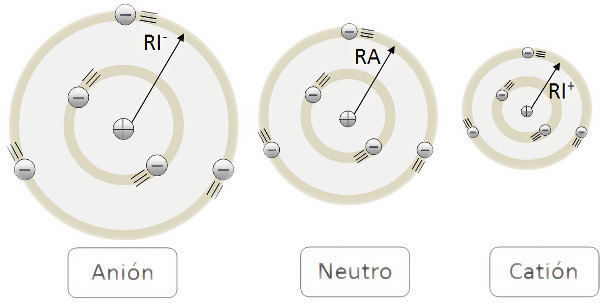

Y...¿los iones?
Cuando un átomo se ioniza, es decir, gana o pierde electrones, su radio varía. El radio atómico varía sensiblemente debido, no solo al aumento o disminución de las capas electrónicas, sino a la repulsión y/o a la atracción, respectivamente, que los electrones experimentan con respecto al núcleo debido a la carga neta que se crea.
Si pierde electrones, pasa a catión, la repulsión entre electrones más externos disminuye y el átomo se contrae. La carga positiva del núcleo es la misma por tanto como hay menos electrones los atrae con más fuerza.
Cuando gana electrones, pasa a anión, la repulsión entre electrones de la última capa dilata el átomo y el radio aumenta.

Conviene también analizar los radios iónicos de elementos isoelectrónicos, es decir, del mismo número de electrones. En este caso tendremos que analizar el número de protones que tienen los núcleos. Aquel ion de los dos isoelectrónicos que tenga más protones será más pequeño puesto que la fuerza de atracción del núcleo será mayor.